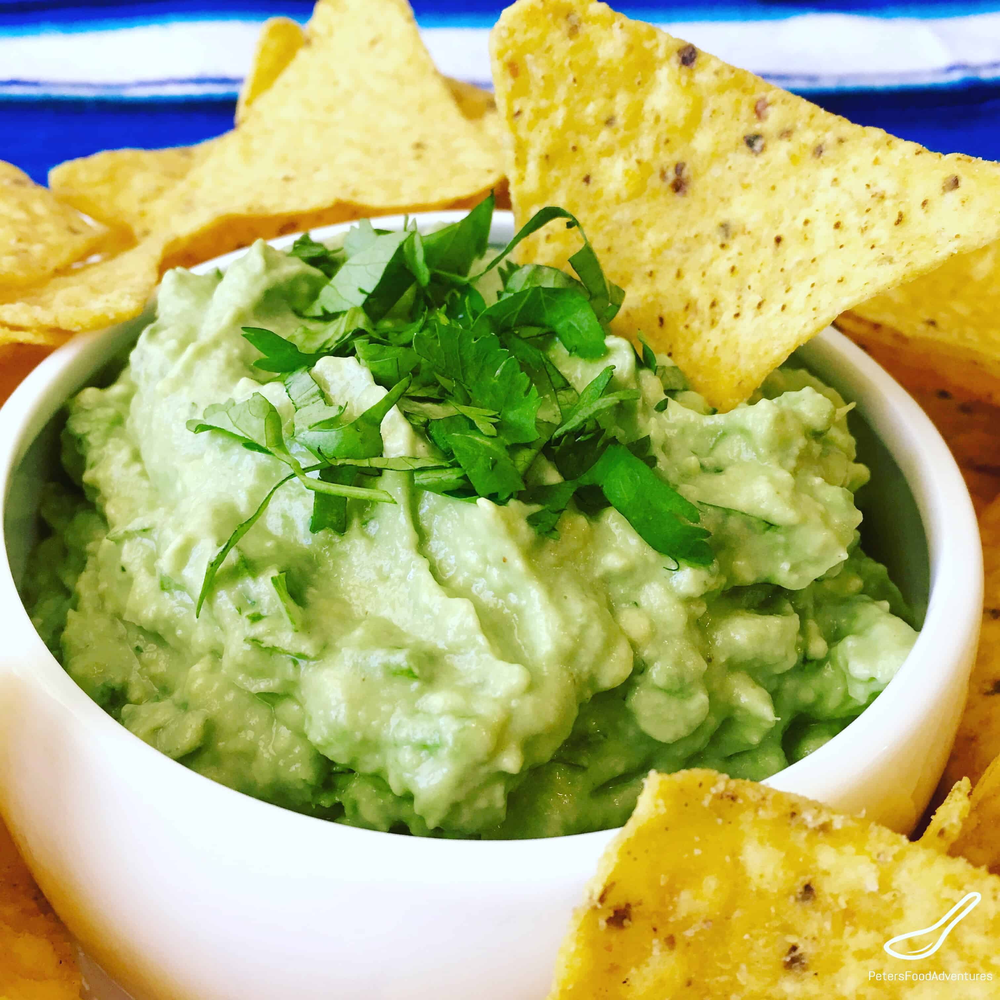

Guacamole

Description
Fresh guacamole is the perfect snack to eat with tortilla chips or as a dip on tacos.
Ingredients
- 4 large haas avocados
- 3 fresh or pickled jalepenos
- 1/3 onion peeled and chopped
- 1 bunch of fresh cilantro chopped
- 2 tablespoons of cream cheese
- 2 limes
- 1 teaspoon of salt
Steps
- Peel and pit avocados and place into blender with chopped cilantro, onion, jalepenos and salt. Squeeze one full lime into blender. Add cream cheese to blender.
- Pulse in blender for about 5 minutes or until texture is creamy
- Put in a 2 quart bowl and serve with tortilla chips.Add more lime to taste.